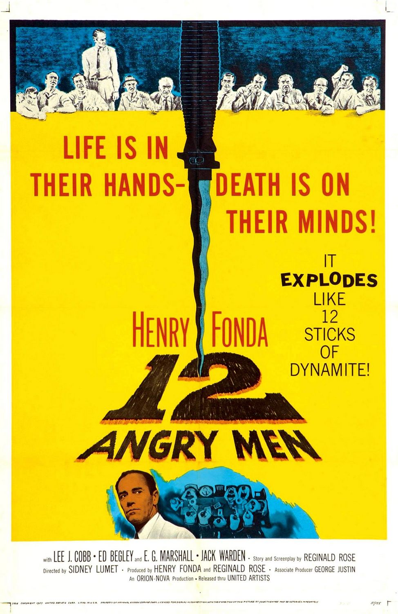

12 Angry Men (1957) is a courtroom drama set almost entirely inside a jury room, where twelve jurors must decide the fate of a young man accused of murder. The film is praised for its tight, dialogue-driven storytelling and its exploration of prejudice, reasonable doubt, and moral responsibility. As the jurors debate, one man’s insistence on careful reasoning gradually challenges the group’s assumptions, building tension without any action or location changes. Sidney Lumet’s direction keeps the single setting visually engaging, and the performances—especially Henry Fonda’s—anchor the moral core of the story. Overall, it’s considered a masterclass in writing and character-driven drama, showing how intense and gripping a simple conversation can be.
